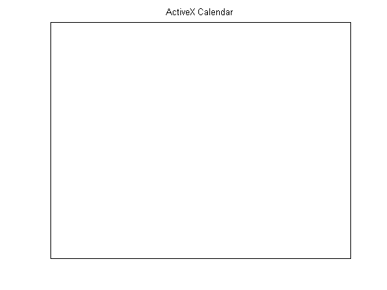

Component Object Model (COM), is a set of object-oriented technologies and tools that enable software developers to integrate application-specific components from different vendors into their own application solution.
COM helps in integrating significantly different features into one application in a relatively easy manner. For example, using COM, a developer may choose a database access component by one vendor, a business graph component by another, and integrate these into a mathematical analysis package produced by yet a third.
COM provides a framework for integrating reusable, binary software components into an application. Because components are implemented with compiled code, the source code may be written in any of the many programming languages that support COM. Upgrades to applications are simplified, as components can be simply swapped without the need to recompile the entire application. In addition, a component's location is transparent to the application, so components may be relocated to a separate process or even a remote system without having to modify the application.
Automation is a method of communication between COM clients and servers. It uses a single, standard COM interface called IDispatch. This interface enables the client to find out about, and invoke or access, methods and properties supported by a COM object. A client and server that communicate using IDispatch are known as an Automation client and Automation server. IDispatch is the only interface supported by MATLAB. Custom and dual interfaces are not supported. MATLAB can communicate with both Automation servers and controls.
The Calendar object is available on most Windows systems. If there is an error, you can register it using "!regsvr32 mscal.ocx'". You may have to specify the full path to "regsvr32.exe" and "mscal.ocx".
This demo also requires Microsoft Excel.
The following commands create an Automation control object and an Automation server object in MATLAB:
% Create an Automation control object and put it in a figure. title('ActiveX Calendar') set(gca,'Xtick',[],'Ytick',[],'Box','on') fp = get(gcf,'Position'); calendarPosition = get(gcf,'DefaultAxesPosition').*fp([3 4 3 4]) ; hCalendar = actxcontrol('MSCAL.Calendar', calendarPosition+1, gcf) % Create an Automation server object. hExcel = actxserver('excel.application')
hCalendar = COM.MSCAL_Calendar hExcel = COM.excel_application
The properties of COM objects can be displayed to the MATLAB command window using the GET function, and are displayed graphically using the property inspector. For a demonstration of the property inspector, take a look at the Graphical Interface section of this demo.
get(hCalendar)
BackColor: 2147483663
Day: 21
DayFont: [1x1 Interface.Microsoft_Forms_2.0_Object_Library.Font]
DayFontColor: 0
DayLength: 1
FirstDay: 1
GridCellEffect: 1
GridFont: [1x1 Interface.Microsoft_Forms_2.0_Object_Library.Font]
GridFontColor: 10485760
GridLinesColor: 2147483664
Month: 4
MonthLength: 2
ShowDateSelectors: 1
ShowDays: 1
ShowHorizontalGrid: 1
ShowTitle: 1
ShowVerticalGrid: 1
TitleFont: [1x1 Interface.Microsoft_Forms_2.0_Object_Library.Font]
TitleFontColor: 10485760
Value: '4/21/2004'
ValueIsNull: 0
Year: 2004
Properties of a COM object can be changed using the SET function.
% This makes the Excel Automation server application visible. set(hExcel,'Visible',1)
The SET function returns a structure array if only the handle to the COM Object is passed as an argument.
out = set(hCalendar)
out =
BackColor: {}
Day: {}
DayFont: {}
DayFontColor: {}
DayLength: {}
FirstDay: {}
GridCellEffect: {}
GridFont: {}
GridFontColor: {}
GridLinesColor: {}
Month: {}
MonthLength: {}
ShowDateSelectors: {}
ShowDays: {}
ShowHorizontalGrid: {}
ShowTitle: {}
ShowVerticalGrid: {}
TitleFont: {}
TitleFontColor: {}
Value: {}
ValueIsNull: {}
Year: {}
You can also use the SET function to simultaneously change multiple properties of COM objects.
set(hCalendar,'Day',20,'Month',3,'Year',2002)
You can display and change properties with enumerated values using the SET and GET functions.
get(hExcel,'DefaultSaveFormat')
ans = xlExcel9795
The SET function can be used to display all possible enumerated values for a specific property.
set(hExcel,'DefaultSaveFormat')
ans =
'xlAddIn'
'xlCSV'
'xlCSVMac'
'xlCSVMSDOS'
'xlCSVWindows'
'xlDBF2'
'xlDBF3'
'xlDBF4'
'xlDIF'
'xlExcel2'
'xlExcel2FarEast'
'xlExcel3'
'xlExcel4'
'xlExcel5'
'xlExcel5'
'xlExcel9795'
'xlExcel4Workbook'
'xlIntlAddIn'
'xlIntlMacro'
'xlWorkbookNormal'
'xlSYLK'
'xlTemplate'
'xlCurrentPlatformText'
'xlTextMac'
'xlTextMSDOS'
'xlTextPrinter'
'xlTextWindows'
'xlWJ2WD1'
'xlWK1'
'xlWK1ALL'
'xlWK1FMT'
'xlWK3'
'xlWK4'
'xlWK3FM3'
'xlWKS'
'xlWorks2FarEast'
'xlWQ1'
'xlWJ3'
'xlWJ3FJ3'
'xlUnicodeText'
'xlHtml'
'xlWebArchive'
'xlXMLSpreadsheet'
The SET function also enables you to set enumerated values for properties that support enumerated types.
set(hExcel,'DefaultSaveFormat','xlExcel9795');
You can create custom properties for a COM object in MATLAB. For instance, you can make the handle to the Excel COM object a property of the Calendar control and also make the handle to the Calendar control a property of the Excel COM Object.
addproperty(hCalendar,'ExcelHandle'); addproperty(hExcel,'CalendarHandle'); addproperty(hCalendar,'TestValue');
set(hCalendar,'ExcelHandle',hExcel); set(hCalendar,'TestValue',rand); set(hExcel,'CalendarHandle',hCalendar);
get(hExcel,'CalendarHandle')
ans = COM.MSCAL_Calendar
get(hCalendar,'ExcelHandle')
ans = COM.excel_application
get(hCalendar,'TestValue')
ans = 5.9142e-001
Custom properties that are created using the ADDPROPERTY function can also be removed.
deleteproperty(hCalendar,'TestValue');
You can display methods of COM objects in MATLAB by using the INVOKE, METHODS and METHODSVIEW functions. METHODSVIEW provides a way to view the methods to the COM objects graphically. For a demonstration of the METHODSVIEW function, take a look at the Graphical Interface section of this demo.
invoke(hExcel)
ActivateMicrosoftApp = void ActivateMicrosoftApp(handle, XlMSApplication) AddChartAutoFormat = void AddChartAutoFormat(handle, Variant, string, Variant(Optional)) AddCustomList = void AddCustomList(handle, Variant, Variant(Optional)) Calculate = void Calculate(handle) CalculateFull = void CalculateFull(handle) CalculateFullRebuild = void CalculateFullRebuild(handle) CentimetersToPoints = double CentimetersToPoints(handle, double) CheckAbort = void CheckAbort(handle, Variant(Optional)) CheckSpelling = bool CheckSpelling(handle, string, Variant(Optional)) ConvertFormula = Variant ConvertFormula(handle, Variant, XlReferenceStyle, Variant(Optional)) DDEExecute = void DDEExecute(handle, int32, string) DDEInitiate = int32 DDEInitiate(handle, string, string) DDEPoke = void DDEPoke(handle, int32, Variant, Variant) DDERequest = Variant DDERequest(handle, int32, string) DDETerminate = void DDETerminate(handle, int32) DeleteChartAutoFormat = void DeleteChartAutoFormat(handle, string) DeleteCustomList = void DeleteCustomList(handle, int32) DoubleClick = void DoubleClick(handle) Evaluate = Variant Evaluate(handle, Variant) ExecuteExcel4Macro = Variant ExecuteExcel4Macro(handle, string) FileDialog = handle FileDialog(handle, MsoFileDialogType) FindFile = bool FindFile(handle) GetCustomListContents = Variant GetCustomListContents(handle, int32) GetCustomListNum = int32 GetCustomListNum(handle, Variant) GetOpenFilename = Variant GetOpenFilename(handle, Variant(Optional)) GetPhonetic = string GetPhonetic(handle, Variant(Optional)) GetSaveAsFilename = Variant GetSaveAsFilename(handle, Variant(Optional)) Goto = void Goto(handle, Variant(Optional)) Help = void Help(handle, Variant(Optional)) InchesToPoints = double InchesToPoints(handle, double) InputBox = Variant InputBox(handle, string, Variant(Optional)) Intersect = handle Intersect(handle, handle, handle, Variant(Optional)) MacroOptions = void MacroOptions(handle, Variant(Optional)) MailLogoff = void MailLogoff(handle) MailLogon = void MailLogon(handle, Variant(Optional)) NextLetter = handle NextLetter(handle) OnKey = void OnKey(handle, string, Variant(Optional)) OnRepeat = void OnRepeat(handle, string, string) OnTime = void OnTime(handle, Variant, string, Variant(Optional)) OnUndo = void OnUndo(handle, string, string) Quit = void Quit(handle) Range = handle Range(handle, Variant, Variant(Optional)) RecordMacro = void RecordMacro(handle, Variant(Optional)) RegisterXLL = bool RegisterXLL(handle, string) Repeat = void Repeat(handle) Run = Variant Run(handle, Variant(Optional)) SaveWorkspace = void SaveWorkspace(handle, Variant(Optional)) SendKeys = void SendKeys(handle, Variant, Variant(Optional)) SetDefaultChart = void SetDefaultChart(handle, Variant(Optional)) Undo = void Undo(handle) Union = handle Union(handle, handle, handle, Variant(Optional)) Volatile = void Volatile(handle, Variant(Optional)) Wait = bool Wait(handle, Variant)
methods(hCalendar)
Methods for class COM.MSCAL_Calendar: AboutBox NextYear PreviousYear delete interfaces propedit set NextDay PreviousDay Refresh deleteproperty invoke release NextMonth PreviousMonth Today events load save NextWeek PreviousWeek addproperty get move send
Calling methods of COM objects can be done in one of the following ways:
Using the INVOKE function
hExcelWorkbooks = get(hExcel,'Workbooks'); hExcelw = invoke(hExcelWorkbooks, 'Add');
Using the method name
hExcelRange = Range(hExcel,'A1:D4'); set(hExcelRange,'Value',rand(4));
Certain COM Objects expose methods with arguments that are also used as output. This is referred to as by-reference argument passing. In MATLAB, this is achieved by sending the output as the return from calling the method.
The GetFullMatrix method of a MATLAB Automation server is an example of a COM method that accepts arguments by reference. This example illustrates how passing arguments by reference is achieved in MATLAB.
hmatlab = actxserver('matlab.application')
hmatlab = COM.matlab_application
invoke(hmatlab)
Execute = string Execute(handle, string) Feval = Variant(Pointer) Feval(handle, string, int32, Variant(Optional)) GetCharArray = string GetCharArray(handle, string, string) GetFullMatrix = [SafeArray Pointer(double), SafeArray Pointer(double)] GetFullMatrix(handle, string, string, SafeArray Pointer(double), SafeArray Pointer(double)) GetWorkspaceData = Variant(Pointer) GetWorkspaceData(handle, string, string) MaximizeCommandWindow = void MaximizeCommandWindow(handle) MinimizeCommandWindow = void MinimizeCommandWindow(handle) PutCharArray = void PutCharArray(handle, string, string, string) PutFullMatrix = void PutFullMatrix(handle, string, string, SafeArray(double), SafeArray(double)) PutWorkspaceData = void PutWorkspaceData(handle, string, string, Variant) Quit = void Quit(handle)
get(hmatlab)
Visible: 1
Interact with the MATLAB running as an Automation server using the PutFullMatrix, Execute, and GetFullMatrix methods.
hmatlab.Execute('B2 = round(100*rand(1+round(10*rand)))');
In the next step, you can determine the size of the array to get from the MATLAB Automation server without needing to check manually.
Execute(hmatlab,'[r,c] = size(B2); B2_size = [r,c];'); [B_size, z_none] = GetFullMatrix(hmatlab,'B2_size','base',[0 0],[0,0]);
Since the size has been determined, you can just get the B2 data using the GetFullMatrix method.
[B, z_none] = GetFullMatrix(hmatlab,'B2','base',zeros(B_size),[0,0])
B =
23 92 1 47 50 38 29 69 74 58 38
61 74 14 42 71 86 34 62 14 42 78
49 18 20 85 43 85 53 79 1 52 68
89 41 20 53 30 59 73 96 89 33 46
76 94 60 20 19 50 31 52 20 43 57
46 92 27 67 19 90 84 88 30 23 79
2 41 20 84 68 82 57 17 66 58 6
82 89 2 2 30 64 37 98 28 76 60
44 6 75 68 54 82 70 27 47 53 5
62 35 45 38 15 66 55 25 6 64 42
79 81 93 83 70 34 44 88 99 21 30
z_none =
0 0
delete(hmatlab)
Events associated with Automation controls can be registered with event handler routines, and also unregistered after the Automation control object has been created in MATLAB.
events(hExcel)
NewWorkbook = void NewWorkbook(handle Wb) SheetSelectionChange = void SheetSelectionChange(handle Sh, handle Target) SheetBeforeDoubleClick = void SheetBeforeDoubleClick(handle Sh, handle Target, bool Cancel) SheetBeforeRightClick = void SheetBeforeRightClick(handle Sh, handle Target, bool Cancel) SheetActivate = void SheetActivate(handle Sh) SheetDeactivate = void SheetDeactivate(handle Sh) SheetCalculate = void SheetCalculate(handle Sh) SheetChange = void SheetChange(handle Sh, handle Target) WorkbookOpen = void WorkbookOpen(handle Wb) WorkbookActivate = void WorkbookActivate(handle Wb) WorkbookDeactivate = void WorkbookDeactivate(handle Wb) WorkbookBeforeClose = void WorkbookBeforeClose(handle Wb, bool Cancel) WorkbookBeforeSave = void WorkbookBeforeSave(handle Wb, bool SaveAsUI, bool Cancel) WorkbookBeforePrint = void WorkbookBeforePrint(handle Wb, bool Cancel) WorkbookNewSheet = void WorkbookNewSheet(handle Wb, handle Sh) WorkbookAddinInstall = void WorkbookAddinInstall(handle Wb) WorkbookAddinUninstall = void WorkbookAddinUninstall(handle Wb) WindowResize = void WindowResize(handle Wb, handle Wn) WindowActivate = void WindowActivate(handle Wb, handle Wn) WindowDeactivate = void WindowDeactivate(handle Wb, handle Wn) SheetFollowHyperlink = void SheetFollowHyperlink(handle Sh, handle Target) SheetPivotTableUpdate = void SheetPivotTableUpdate(handle Sh, handle Target) WorkbookPivotTableCloseConnection = void WorkbookPivotTableCloseConnection(handle Wb, handle Target) WorkbookPivotTableOpenConnection = void WorkbookPivotTableOpenConnection(handle Wb, handle Target)
The following command registers five of the supported events for hCalendar to the event handler, e_handler.m.
dbtype e_handler.m 1:7
1 function e_handler(varargin)
2
3 disp(['Event ',varargin{end},' triggered!!!'])
4
5 if strcmp(varargin{end},'NewYear')
6 disp('HAPPY NEW YEAR!')
7 end
registerevent(hCalendar, {'NewYear' 'e_handler';...
'NewMonth' 'e_handler';...
'DblClick' 'e_handler';...
'KeyPress' 'e_handler';...
'AfterUpdate' 'e_handler'})
eventlisteners(hCalendar)
ans =
'NewYear' 'e_handler'
'NewMonth' 'e_handler'
'DblClick' 'e_handler'
'KeyPress' 'e_handler'
'AfterUpdate' 'e_handler'
Another way of doing this would be to first register all the events, and then unregister the events that are not needed. First, restore the Automation control to its original state before any events were registered.
unregisterallevents(hCalendar) eventlisteners(hCalendar)
ans =
{}
Now register all the events that this COM object supports to the event handler, e_handler.m.
registerevent(hCalendar,'e_handler')
eventlisteners(hCalendar)
ans =
'Click' 'e_handler'
'DblClick' 'e_handler'
'KeyDown' 'e_handler'
'KeyPress' 'e_handler'
'KeyUp' 'e_handler'
'BeforeUpdate' 'e_handler'
'AfterUpdate' 'e_handler'
'NewMonth' 'e_handler'
'NewYear' 'e_handler'
Next unregister any events you will not be needing.
unregisterevent(hCalendar,{'Click' 'e_handler';...
'KeyDown' 'e_handler';...
'KeyUp' 'e_handler';...
'BeforeUpdate' 'e_handler'})
eventlisteners(hCalendar)
ans =
'DblClick' 'e_handler'
'KeyPress' 'e_handler'
'AfterUpdate' 'e_handler'
'NewMonth' 'e_handler'
'NewYear' 'e_handler'
If there is an error when invoking a method, the error thrown shows the source, a description of the error, the source help file, and help context ID, if supported by the COM Object.
set(hExcelw,'Saved',1); invoke(hExcelWorkbooks,'Close') try Open(hExcelWorkbooks,'thisfiledoesnotexist.xls') catch disp(lasterr) end
Invoke Error, Dispatch Exception: Source: Microsoft Excel Description: 'thisfiledoesnotexist.xls' could not be found. Check the spelling of the file name, and verify that the file location is correct. If you are trying to open the file from your list of most recently used files on the File menu, make sure that the file has not been renamed, moved, or deleted.
COM objects are destroyed in MATLAB when the handle to the object or the handle to one of the object's interfaces is passed to the DELETE function. The resources used by a particular object or interface are released when the handle of the object or interface is passed to the RELEASE function.
By displaying the contents of the MATLAB workspace using the WHOS command, you can observe the COM object and interface handles before and after using the RELEASE and DELETE functions.
whos hCalendar hExcel
Name Size Bytes Class hCalendar 1x1 COM.MSCAL_Calendar hExcel 1x1 COM.excel_application Grand total is 2 elements using 0 bytes
release(hExcelw) whos hCalendar hExcel
Name Size Bytes Class hCalendar 1x1 COM.MSCAL_Calendar hExcel 1x1 COM.excel_application Grand total is 2 elements using 0 bytes
Quit(hExcel) delete(hExcel); delete(hCalendar); whos hCalendar hExcel
Name Size Bytes Class hCalendar 1x1 handle hExcel 1x1 handle Grand total is 2 elements using 0 bytes